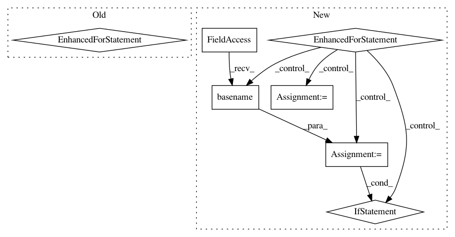

1acd2c4d48013ea1623ddbf9f28166a85404213a,models/experimental/inception/inception_v3.py,,main,#Any#,678
Before Change
timeout=FLAGS.eval_timeout,
timeout_fn=terminate_eval)
for checkpoint in get_next_checkpoint():
tf.logging.info("Starting to evaluate.")
try:
eval_results = inception_classifier.evaluate(
input_fn=imagenet_eval.input_fn,
steps=eval_steps,
hooks=eval_hooks,
checkpoint_path=checkpoint)
tf.logging.info("Evaluation results: %s" % eval_results)
except tf.errors.NotFoundError:
// skip checkpoint if it gets deleted prior to evaluation
tf.logging.info("Checkpoint %s no longer exists ... skipping")
elif FLAGS.mode == "train_and_eval":
for cycle in range(FLAGS.train_steps // FLAGS.train_steps_per_eval):
tf.logging.info("Starting training cycle %d." % cycle)
inception_classifier.train(
After Change
if FLAGS.mode == "eval":
// Run evaluation when there is a new checkpoint
for checkpoint in evaluation.checkpoints_iterator(FLAGS.model_dir):
tf.logging.info("Starting to evaluate.")
try:
start_timestamp = time.time() // Includes compilation time
eval_results = inception_classifier.evaluate(
input_fn=imagenet_eval.input_fn,
steps=eval_steps,
hooks=eval_hooks,
checkpoint_path=checkpoint)
elapsed_time = int(time.time() - start_timestamp)
tf.logging.info(
"Eval results: %s. Elapsed seconds: %d", eval_results, elapsed_time)
// Terminate eval job when final checkpoint is reached
current_step = int(os.path.basename(checkpoint).split("-")[1])
if current_step >= FLAGS.train_steps:
tf.logging.info(
"Evaluation finished after training step %d", current_step)
break
except tf.errors.NotFoundError:
// Since the coordinator is on a different job than the TPU worker,
// sometimes the TPU worker does not finish initializing until long after
// the CPU job tells it to start evaluating. In this case, the checkpoint
// file could have been deleted already.
tf.logging.info(
"Checkpoint %s no longer exists, skipping checkpoint", checkpoint)
elif FLAGS.mode == "train_and_eval":
for cycle in range(FLAGS.train_steps // FLAGS.train_steps_per_eval):
tf.logging.info("Starting training cycle %d." % cycle)
inception_classifier.train(
In pattern: SUPERPATTERN
Frequency: 3
Non-data size: 7
Instances
Project Name: tensorflow/tpu
Commit Name: 1acd2c4d48013ea1623ddbf9f28166a85404213a
Time: 2018-04-16
Author: bignamehyp@users.noreply.github.com
File Name: models/experimental/inception/inception_v3.py
Class Name:
Method Name: main
Project Name: tensorflow/tpu
Commit Name: 1acd2c4d48013ea1623ddbf9f28166a85404213a
Time: 2018-04-16
Author: bignamehyp@users.noreply.github.com
File Name: models/experimental/inception/inception_v2.py
Class Name:
Method Name: main
Project Name: deepfakes/faceswap
Commit Name: fe664e274814a75b56c2f8aeabcb1a51d8f5d4f0
Time: 2020-10-09
Author: 36920800+torzdf@users.noreply.github.com
File Name: scripts/train.py
Class Name: Train
Method Name: _set_timelapse